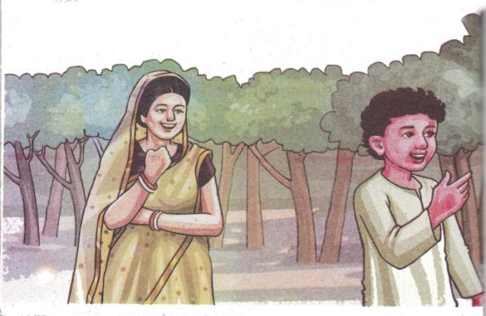
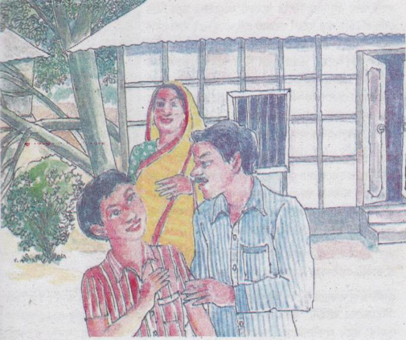

ভাবুক ছেলেটি
দশ এগারো বছরের ছেলেটি তেমন দুরন্ত নয়। পড়াশোনায় সে ভালো, খেলাধুলাও করে। তবে সময় পেলেই গাছ-গাছালি পর্যবেক্ষণ করে। রোদ বৃষ্টির ব্যাপারটাও দেখে সে। আকাশে মেঘ ডাকে। বিদ্যুৎ চমকায়। বাজ পড়ে। কেন এমন হয়? অবাক বিস্ময়ে ভাবে সে। ঝড়ে গাছপালা ভেঙ্গে গেলে বাবাকে প্রশ্ন করে।
- আচ্ছা বাবা, গাছ ভেঙ্গে গেলে, ওদেরকে কাটলে ব্যথা পায় না?
ছেলের কথা শুনে মা হাসেন। বাবা কিন্তু হাসলেও ছেলের প্রশ্নের জবাব দেওয়ার চেষ্টা করেন। ওর বাবা ম্যাজিস্ট্রেট ছিলেন। আগে স্কুলে শিক্ষকতা করেছেন।
ছেলেটির বাবার বাড়ি বিক্রমপুরের রাঢ়িখাল গ্রামে। তবে তার জন্ম ময়মনসিংহে। ১৮৫৮ সালের ত্রিশে নভেম্বর। ওর পড়াশোনায় হাতেখড়ি হয়েছিল বাড়িতেই। তারপর ময়মনসিংহে স্কুল শিক্ষার ধাপ শেষ করে সে ভর্তি হয় কলকাতায়। সেন্ট জেভিয়ার্স স্কুল থেকে ১৮৭৪ সালে সে কৃতিত্বের সঙ্গে প্রবেশিকা পরীক্ষা পাস করে। কৃতিত্বের ধারায় সে ১৮৭৮ সালে এফএ পাশ করে। তারপর ১৮৮০ সালে বিজ্ঞান শাখায় বিএস পাস করে বিলেতে যায় ডাক্তারি পড়তে।
সেই ছেলটিই বড় হয়ে প্রথম বাঙালি বৈজ্ঞানিক হিসেবে জগৎ জোড়া খ্যাতি অর্জন করে। তোমরা অনেকেই হয়তো বুঝতে পেরেছ কে তিনি? হ্যাঁ, সেদিনকার সেই ভাবুক ছেলেটিই পরবর্তীকালের বিজ্ঞানী জগদীশচন্দ্র বসু।


জগদীশচন্দ্র এক বছর ডাক্তারি পড়ার পর ১৮৮১ সালে ইংলণ্ডের কেমব্রিজ বিশ্ববিদ্যালয়ে যান। এখান থেকে উচ্চশিক্ষা লাভ করেন তিনি। ১৮৮৫ সালে দেশে ফিরে এসে কলকাতায় প্রেসিডেন্সি কলেজে পদার্থবিজ্ঞানের অধ্যাপক পদে যোগ দেন। তখন দেশ ছিল পরাধীন। এ সময় একই পদে একজন ইংরেজ অধ্যাপক যে বেতন পেতেন ভারতীয়রা তার তিন ভাগের দুই ভাগ। জগদীশচন্দ্র অস্থায়ীভাবে চাকরি করছিলেন বলে তাঁর বেতন আরও একভাগ কেটে নেওয়া হয়। এর প্রতিবাদে তিনি দীর্ঘ তিন বছর বেতন না নিয়ে কর্তব্য পালন করেন। শেষ পর্যন্ত ইংরেজ সরকার তাঁকে স্বীকৃতি দিতে বাধ্য হন। সকল বকেয়া পরিশোধ করে চাকরিতে স্থায়ী করে তাঁকে। তখন থেকেই তিনি বিজ্ঞানী জগদীশচন্দ্র বসু হয়ে ওঠেন। লন্ডন বিশ্ববিদ্যালয় তাঁকে ডিএসসি ডিগ্রি প্রদান করেন।
৮৭জগদীশচন্দ্র বসু নানা বিষয়ে গবেষণা করেছেন। তবে তিনি বেশি পরিচিত লাভ করেন গাছেরও প্রাণ আছে-এই সত্য প্রমাণ করে। তিনি দেখিয়েছেন যে, উদ্ভিদ ও প্রাণীর জীবনের মধ্যে অনেক মিল আছে। ১৮৯৫ সালে তিনি অতিক্ষুদ্র তরঙ্গসৃষ্টি আবিষ্কার করেন। কোনো তার ছাড়া তরঙ্গ এক স্থান থেকে অন্য স্থানে প্রেরণে সফলতা অর্জন করেন। তারই প্রয়োগ ঘটেছে আজকের বেতার, টেলিভিশন, রাডারসহ বিশ্বের অধিকাংশ তথ্যের আদান-প্রদান এবং মহাকাশ যোগাযোগের ক্ষেত্রে।
মাত্র ১৮ মাসের মধ্যে করা পরীক্ষণগুলো ইউরোপীয় বিজ্ঞানীদের চমকে দেয়। তাঁর পাণ্ডিত্যপূর্ণ বক্তৃতা শুনে বিখ্যাত বৈজ্ঞানিক অলিভার লজ ও লর্ড কেলভিন বিলেতেই অধ্যাপনা করার জন্য তাঁকে আমন্ত্রণ জানান। কিন্তু দেশের কল্যাণের জন্যই তিনি নিজ দেশে ফিরে আসেন।
তাঁর আশ্চর্য সব আবিষ্কার দেখে সুবিখ্যাত বিজ্ঞানী আইনস্টাইন বলেছিলেন: জগদীশ্চন্দ্র বসুর প্রত্যেকটি আবিষ্কার বিজ্ঞানজগতে এক একটি বিজয়স্তম্ভ।
জগদীশচন্দ্র বাংলাতেও বেশ লিখেছেন, বিশেষ করে তোমাদের মতো শিশুদের জন্য। তাঁর লেখা ‘নিরুদ্দেশের কাহিনী’ বাংলা ভাষায় লেখা প্রথম বৈজ্ঞানিক কল্পকাহিনি। এটি পরে ‘পলাতক তুফান’ নামে জগদীশচন্দ্রের ‘অব্যক্ত’ নামক বইয়ে ছাপা হয়। তাঁর লেখা ‘অদৃশ্য আলোক’ তোমাদের আনন্দ দেবে।
১৯১৫ সালে ব্রিটিশ-ভারত সরকার তাঁকে ‘নাইট উপাধি’ দেন। তাই তাঁর উপাধিসহ নাম হয় স্যার জগদীশচন্দ্র বসু। ১৯১৬ সালে তিনি অধ্যাপনা থেকে অবসর গ্রহণ করেন। এর দু বছর পর প্রতিষ্ঠা করেন জগদীশচন্দ্র বসু বিজ্ঞানমন্দির। মৃত্যুর আগ পর্যন্ত তিনি সেই বিজ্ঞান মন্দিরে গবেষণা পরিচালনা করেন। বিজ্ঞান শিক্ষা ও চর্চার ক্ষেত্রে তাঁর সফলতা বিজ্ঞানী গ্যালিলিও-নিউটনের সমকক্ষ ছিল। ঢাকা বিশ্ববিদ্যালয় তাঁকে ডিএসসি ডিগ্রি প্রদান করে ১৯৩৫ সালে। জগদীশচন্দ্র বসু ভারতের গিরিডিতে মারা যান ১৯৩৭ সালের তেইশে নভেম্বর।
ওই সময়ের সেই ভাবুক ছেলেটিই স্যার জগদীশচন্দ্র বসু। একজন বিশ্বখ্যাত বিজ্ঞানী। তিনি বাঙালির গৌরব। সমগ্র ভারতবর্ষের গৌরব। পৃথিবীকে দেখিয়েছেন বিজ্ঞানের নতুন পথ।
৮৮অনুশীলনী
১. শব্দগুলো পাঠ থেকে খুঁজে বের করি। অর্থ বলি।
|
পর্যবেক্ষণ |
পাণ্ডিত্যপূর্ণ |
বিজয়স্তম্ভ |
গিরিডি |
|
কল্পকাহিনি |
বৈজ্ঞানিক কল্পকাহিনি |
প্রবেশিকা |
এফএ |
২. ঘরের ভিতরের শব্দগুলি খালি জায়গায় বসিয়ে বাক্য তৈরি করি।
|
বিজয়স্তম্ভ |
কল্পকাহিনি |
আবিষ্কার |
কল্যাণ |
পাণ্ডিত্যপূর্ণ |
|
দুরন্ত |
পদার্থে |
পদার্থ বিজ্ঞানের |
বিস্ময়ে |
বাড়িতে |
|
অতিক্ষুদ্র |
কর্তব্য |
প্রাণী জীবনের | ||
ক. তাঁর […………………] বক্তৃতা শুনে তাঁকে অধ্যাপনা করার আমন্ত্রণ জানানো হয়।
খ. দেশের [……………………….] করার জন্যই তিনি নিজ দেশে ফিরে আসেন।
গ. জগদীশচন্দ্র বসুর আশ্চর্য সব [……………] দেখে আইনস্টাইন মুগ্ধ হয়ে গিয়েছিলেন।
ঘ. জগদীশচন্দ্র বসুর প্রতিটি আবিষ্কার বিজ্ঞান জগতে এক একটি […………………]।
ঙ. জগদীশচন্দ্র বসুর ‘নিরুদ্দেশের কাহিনী’ বাংলা ভাষায় লেখা প্রথম বৈজ্ঞানিক [……………]।
চ. ছেলেটি তেমন [……………………………………..] নয়।
ছ. মেঘ ডেকে আকাশে বিদ্যুৎ চমকে বাজ পড়লে অবাক […………………….] ভাবে।
জ. ওর পড়াশোনার শুরু [………………………………… .]।
ঝ. প্রেসিডেন্সি কলেজে […………………………………..] অধ্যাপক পদে যোগ দেন।
ঞ. প্রতিবাদে তিনি দীর্ঘ তিন বছর বেতন না নিয়ে [………………….] পালন করেন।
ট. তিনি দেখিয়েছিলেন যে, উদ্ভিদ ও [………………………] মধ্যে অনেক মিল আছে।
ঠ. তিনি [………………………………………] তরঙ্গসৃষ্টি আবিষ্কার করেন।
৮৯৩. নিচের প্রশ্নগুলোর উত্তর লিখি ও বলি।
ক. ভাবুক ছেলেটি আসলে কে ছিল?
খ. তিনি ছোটবেলায় কী কী নিয়ে ভাবতেন?
গ. তিনি কবে, কোথা থেকে কৃতিত্বের সঙ্গে প্রবেশিকা পরীক্ষায় উত্তীর্ণ হয়েছিল?
ঘ. কখন থেকে তিনি ‘বিজ্ঞানী জগদীশচন্দ্র বসু’ হয়ে ওঠেন?
ঙ. কোন সত্য প্রমাণ করে তিনি বেশি পরিচিত লাভ করেন?
চ. তাঁর বক্তৃতার সফলতা সবচেয়ে বেশি ছিল কোন বিষয়ে?
ছ. বিজ্ঞান শিক্ষা ও চর্চার ক্ষেত্রে তাঁর সফলতাকে কোন নামকরা বৈজ্ঞানিকদের সঙ্গে তুলনা করা হয়েছে?
জ. ‘পলাতক তুফান’ নামে লেখাটির আগে কী নাম ছিল? তাঁর কোন বইয়ে এটি ছাপা হয়?
ঝ. অধ্যাপনা থেকে অবসর গ্রহণের পর তিনি কী প্রতিষ্ঠা করেন?
ঞ. ‘তাঁর প্রত্যেকটি আবিষ্কার বিজ্ঞানজগতে এক একটি বিজয়স্তম্ভ। ’ এমন কথা কোন বিখ্যাত ব্যক্তি বলেছিলেন? কেন বলেছিলেন?
৪. ঠিক উত্তরটিতে টিক () চিহ্ন দিই।
ক. কোন সত্যটি প্রমাণ করে জগদীশচন্দ্র বসু বেশি পরিচিতি লাভ করেন?
১. গাছের প্রাণ আছে
২. অতিক্ষুদ্র তরঙ্গ সৃষ্টি করে
৩. মহাকাশ যোগাযোগের ক্ষেত্রে
৪. বেতার এবং টেলিভিশন আবিষ্কারের মাধ্যমে
খ. জগদীশচন্দ্র বসু কলকাতায় প্রেসিডেন্সি কলেজে কোন বিষয়ের অধ্যাপক হিসেবে যোগদান করেন?
১. বাংলা
২. পদার্থবিজ্ঞান
৩. ইংরেজি
৪. গণিত
গ. জগদীশচন্দ্র বসু কোথায় জন্মগ্রহণ করেন?
১. ময়মনসিংহ
২. ঢাকা
৩. কুমিল্লা
৪. ফরিদপুর
ঘ. ‘জগদীশচন্দ্র বসুর প্রতিটি আবিষ্কার বিজ্ঞানজগতে এক একটি বিজয়স্তম্ভ’ কথাটি কে বলেছিলেন?
১. বিজ্ঞানী অলিভার লজ
২. বিজ্ঞানী লর্ড কেলভিন
৩. বিজ্ঞানী আইনস্টাইন
৪. বিজ্ঞানী গ্যালিলিও
৯০৫. কথাগুলো বুঝে নিই।
|
শিক্ষার ধাপ পার |
প্রাথমিক বিদ্যালয়, উচ্চ বিদ্যালয়, মহাবিদ্যালয়, বিশ্ববিদ্যালয়-এর শিক্ষা হলো একটার পর একটা শিক্ষার ধাপ। |
|
বকেয়া পরিশোধ করে |
কারো নিকট কোনো টাকা-পয়সা পাওনা থাকলে যদি সময়মতো দেওয়া না হয় তা বকেয়া হয়ে যায়। পরে যদি আগের পাওনা দিয়ে দেওয়া হয় তবে তাকে বলে বকেয়া পরিশোধ। |
|
অন্যতম |
বহুর মধ্যে এক হলে তাকে বলা হয় অন্যতম। কোনো কিছুকে বিশেষভাবে বোঝানোর জন্য ‘অন্যতম’ শব্দটি ব্যবহার করা যায়। |
|
তথ্যের আদান-প্রদান |
তথ্য বলতে ঠিক সংবাদ, প্রকৃত অবস্থা বা সত্যকে বোঝাতো। কিন্তু আজকের দিনে লিখে, ছাপিয়ে অথবা বেতার-টেলিভিশন-ফোন-ইন্টারনেট সাহায্যে যত রকম কিছু পাওয়া যায়, পাঠানো যায় তার সবই তথ্যের আদান-প্রদান। |
|
নাইট উপাধি |
নাইট উপাধি ব্রিটিশরাজের অত্যন্ত সম্মানজনক উপাধি। এঁদেরকে ‘স্যার’ বলে সম্বোধন করা হয়। |
৬. কর্ম-অনুশীলন।
‘বিজ্ঞান শিক্ষাই সভ্যতা বিনির্মাণের একমাত্র হাতিয়ার’ – বিষয়টি নিয়ে শিক্ষকের সহায়তায় বিতর্ক প্রতিযোগিতায় অংশগ্রহণ করি।
৭. আমার জানা যেকোন একজন বিখ্যাত ব্যক্তি সম্পর্কে ২০টি বাক্য লিখি।
৯১